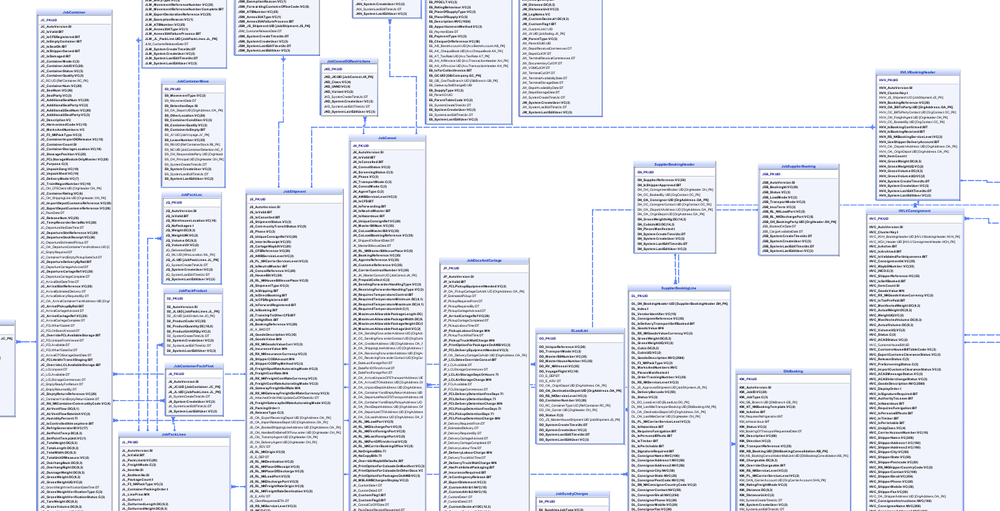
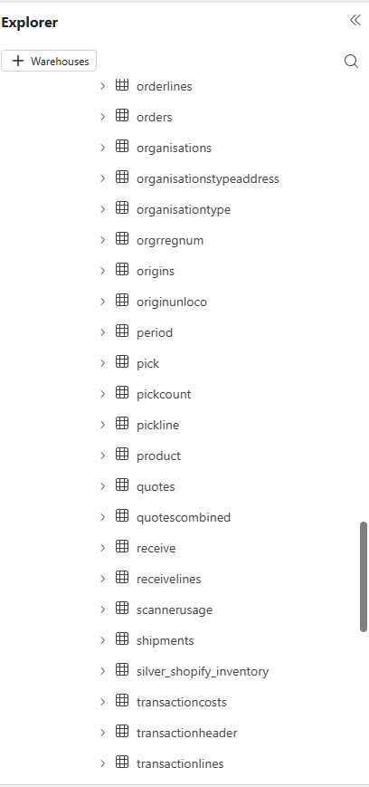
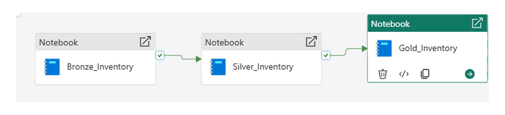
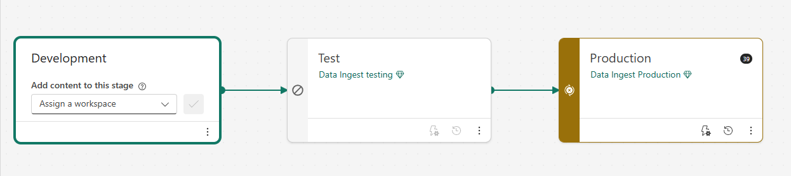

Problem
The business had no central reporting data environment, with reports connecting directly to separate applications and data preparation repeated across reports.
Introduced and built a central data and reporting environment from the ground up, bringing together business applications and transforming how data is managed, accessed and used across the business.
The business had no central reporting data environment, with reports connecting directly to separate applications and data preparation repeated across reports.
I introduced and implemented Microsoft Fabric, building a central environment for extracting, transforming, storing and modelling data from different business applications.
Microsoft Fabric has become the central environment for data and reporting across the business, bringing together information from different applications, reducing repeated work and providing reliable reporting that supports better decisions.
Before Microsoft Fabric, there was no central reporting data environment. Reports connected directly to business applications, meaning data had to be extracted and transformed separately each time, making reporting less efficient and harder to maintain.
There was also an opportunity to make better use of the data already held across the business, bringing it together to provide deeper analysis, improve processes and support future development.
I built the Microsoft Fabric environment from scratch, bringing together data from CargoWise and other business applications using SQL, pipelines, notebooks and Dataflow Gen2.
As reporting has grown across the business, I've continued developing the environment with reusable datasets, semantic models, deployment pipelines and GitHub integration, making reporting easier to manage and maintain.
CargoWise contains thousands of tables covering different areas of the business. The database is designed to support operational processes, which makes extracting and preparing data for reporting more complicated.
Rather than bringing everything into Fabric, I use SQL to extract the information needed, combine tables and transform the data into a clearer structure for reporting. Shipments are used here as one example of the approach applied across the wider database.

I use SQL to combine CargoWise tables, make the data easier to understand and create additional fields needed for reporting. By carrying out these transformations at source, less processing is needed in Fabric, helping reduce capacity usage and making data preparation more efficient.
The examples below show different ways I've prepared CargoWise data before loading it into Fabric.
Shipment reporting requires information from multiple CargoWise tables. I use joins to bring together related data, including organisations and additional shipment information. Subqueries allow me to select specific records before joining them to the main dataset.
LEFT JOIN JOBHEADER ON JH_ParentID = JS_PK
LEFT JOIN ORGADDRESS OAL ON JH_OA_LocalChargesAddr = OAL.OA_PK
LEFT JOIN ORGHEADER OHL ON OAL.OA_OH = OHL.OH_PK
LEFT JOIN (
SELECT
E2_ParentID,
E2_OA_Address,
E2_AddressType
FROM jobdocaddress
WHERE E2_AddressType = 'CRD'
) AS SHP ON SHP.E2_ParentID = JS_PKThis example uses revenue, job activity, ranking and date calculations to create useful reporting fields before the data is loaded into Fabric.
Select
RANK() OVER (ORDER BY SUM(JR_LocalSellAmt) DESC) AS Rank,
OH_Code as Code,
OH_Fullname as Name,
Count(DISTINCT(JH_PK)) AS Jobs,
SUM(JR_LocalSellAmt) as Revenue,
CAST(SUM(JR_LocalSellAmt) as DECIMAL(18,2))/ NULLIF(COUNT(DISTINCT JH_PK),0) AS AveragePerJob,
MAX(JH_SystemCreateTimeUtc) as LastJobDate,
DATEDIFF(Day,MAX(JH_SystemCreateTimeUtc),GETDATE()) AS DaysSinceLastJob,
Case
WHEN SUM(JR_LocalSellAmt) > 100000 THEN 'Gold'
WHEN SUM(JR_LocalSellAmt) > 25000 THEN 'Silver'
Else 'Bronze'
end as HealthBandI use CTEs and window functions to handle situations where multiple records exist for the same item. The first example ranks organisation relationships by priority and creation date, allowing me to select one organisation for each product before loading the data into Fabric. The second calculates running inventory over time.
Selecting organisation relationships
WITH RankedRelations AS (
SELECT
OU_OP,
OU_OH,
OU_Relationship,
OU_SystemCreateTimeUTC,
ROW_NUMBER() OVER (
PARTITION BY OU_OP
ORDER BY
CASE OU_Relationship
WHEN 'OWN' THEN 1
WHEN 'BTH' THEN 2
WHEN 'SUP' THEN 3
ELSE 4
END,
OU_SystemCreateTimeUTC DESC
) AS rn
FROM OrgPartRelation
WHERE OU_Relationship IN ('OWN','BTH','SUP')
)Running inventory calculation
SELECT *,
SUM(Units) OVER (
PARTITION BY OrganisationID
ORDER BY FinalisedDate
ROWS BETWEEN UNBOUNDED PRECEDING AND CURRENT ROW
) AS RunningInventoryThe data extracted and transformed from different business applications is stored centrally in Microsoft Fabric, creating reusable datasets that can support reporting across the business.
From there, I build semantic models to bring together the information needed for different reports, rather than repeatedly preparing the same data from the original applications.
The shipment model is one example of how I've organised data into a clearer structure for Power BI.


Different business applications require different approaches to bringing data into Fabric. Alongside CargoWise, I've implemented integrations using APIs, notebooks, Dataflow Gen2 and pipelines, depending on the source and reporting requirements.
Operational data is transformed at source and loaded into reusable Lakehouse tables.
Inventory is processed through Bronze, Silver and Gold before being compared with CargoWise.
Quotation data is combined with CargoWise to provide a wider view of quote activity.

I've also used Dataflow Gen2 for API and application data including PeopleHR, Jira, SharePoint and Viva Insights. This allows me to choose the method that best fits each source rather than using the same approach for everything.
As the reporting environment has grown, I've continued to develop and maintain it, managing changes, refreshes and reporting availability across the business.
I use deployment pipelines to test changes before moving them into production, helping reduce the risk of disrupting reporting already used by the business.
GitHub integration allows me to track changes and maintain version history as the environment develops.
Hourly, daily and monthly refresh schedules are used according to how current each area of reporting needs to be.

As the Fabric environment has developed, I've built reporting across different areas of the business, bringing together data from multiple applications to provide clearer information for day-to-day operations and management decisions.
Reports are available through one Power BI app, with refresh schedules based on how frequently the information is needed.
Financial performance, profitability, budgets and forecasting.
Customer performance, revenue, gross profit and net profit, helping understand profitability at customer level.
Invoices due, overdue and not yet due, helping monitor outstanding balances.
Hourly visibility of current and future orders, overdue orders, back orders and historical activity.
Current stock availability and customer inventory information.
Warehouse capacity, customer space usage, pallet numbers and available versus unavailable locations.
Compares Shopify and CargoWise stock levels to identify differences.
Shipment activity, origins, destinations, shippers, trade lanes and costs.
Profitability, carrier performance, customer analysis and vehicle utilisation.
Current agent activity and performance.
Sales opportunities, win/loss trends, conversion, sales performance and customer value.
Campaign activity and marketing insights.
Quoting activity, conversion, lost quotes and outstanding follow-ups across CargoWise and WebCargo.
Customer shipments, emissions, warehouse movements and inventory in one view.
Shipment activity, origins, destinations, shippers, trade lanes and costs.
Resource utilisation, available capacity, absence and associated costs.
Duplicate organisations, incorrect records and data improvement progress.
Automation pass rates, customer-level performance, parsing failures and outstanding work.
Application costs, module utilisation and opportunities to make better use of existing functionality.
Project progress, performance and status, used as a reference point for monthly strategy meetings.
A central data environment bringing together information from different business applications.
Data from CargoWise and other systems is now brought together in Microsoft Fabric, allowing information to be combined for more detailed reporting and analysis across the business.
More efficient and consistent reporting through reusable datasets.
Data is extracted and transformed centrally, reducing repeated preparation work across reports. Reusing the same datasets also reduces the risk of inconsistent information and calculations between reports.
Reporting is easier to access and kept up to date.
Users can access reporting through one Power BI app on their laptops or phones, with hourly, daily and monthly refresh schedules depending on business requirements.
A more reliable and organised reporting environment.
Using deployment pipelines and GitHub allows me to manage changes, keep track of previous versions and reduce the risk of disrupting reporting used across the business.
Better data quality, processes and business decisions.
Reporting has helped identify incorrect data, master-data issues and opportunities to improve processes. It also provides management with clearer financial and operational information to support decisions across the business.
Microsoft Fabric · SQL · Power BI · Python · Dataflow Gen2 · Data Factory · Pipelines · Lakehouse · Notebooks · APIs · ETL · Data Modelling · Semantic Models · Deployment Pipelines · GitHub · Data Quality